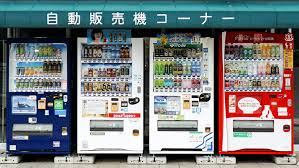
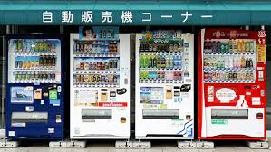

SpotLight


Wondering how to make the most out of your visit in Japan?
Whether you're planning your first international trip or just curious about what Japan has to offer, this guide is written for you.

 
